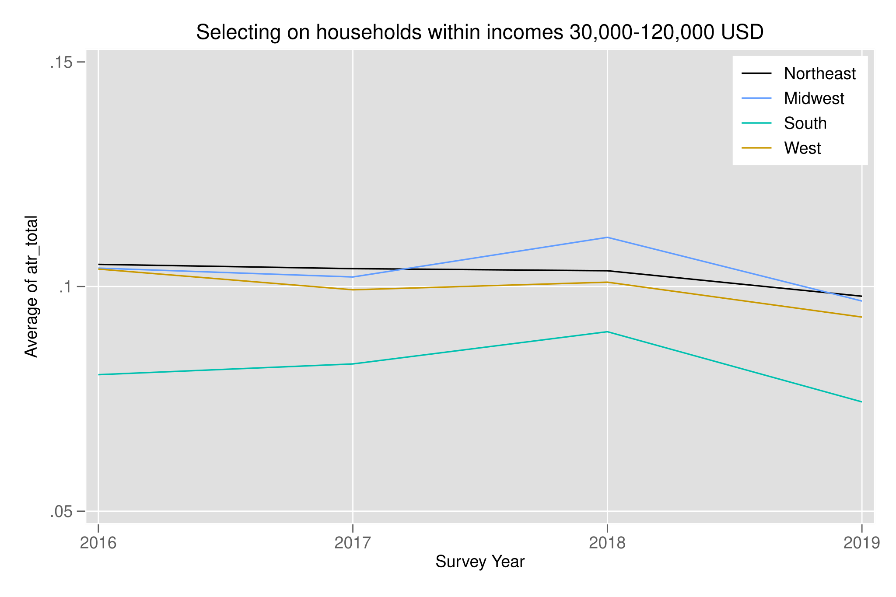

Where \(y_{it}\) is reported taxable income and \(tax_{it}\) is the net-of-tax rate (i.e. 1 minus tax rate)
Important policy parameter for understanding how tax changes translate into changes in taxable income (i.e. Laffer curve)
Identification
Since \(tax_{it}\) is endogenous
Instrument:
\[
sim_{it} = TAXSIM(\mathbf{x}_{it},s,t)
\]
Predicted \(tax_{it}\) based on observable income in the previous period
Paper use panel data from administrative tax records
Warning
This project takes inspiration from Gruber and Saez (2002), but we do not have the same data structure. The authors use panel data to look at changes in taxes at the individual/household level. There are other useful examples of approaches to simulated instruments, like Grossman, Tello-Trillo, and Willage (2022) from Tutorial 4.
Reduced form
For this exercise, you will not observe \(tax\).
Can’t conduct IV estimation
But, you can estimate the reduced form relationship
where \(\widetilde{sim}_{it}\) is residual from regressing \(sim\) on \(\mathbf{x}\)
Controls
So, the controls you choose are important!
To “isolate” the exogenous variation in \(sim\) you need to control for the right factors.
CautionIncome
The primary determinant of taxes is income. In Gruber and Saez (2002) the authors use panel data to control for income in the previous period. Meaning income cannot be an outcome of the contemporaneous tax change.
In the paper, the simulated taxes for the current period are based on current tax policy, but previous period’s income.
Matching
If you think about it from a matching perspective, the instrument plugs a set of characteristics into a TAXSIM function2
\[
sim_{it} = TAXSIM(\mathbf{x}_{it},s,t)
\]
That takes as inputs:
The household’s characteristics
Their state
The year
If two households (\(i,i'\)) have the same \(\mathbf{x}\), live in the same \(s\) state, in the same period \(t\),
xtline atr_total, overlay xtitle(Survey Year) ytitle(Average of atr_total) ylabel(0.05(0.05)0.15) legend(pos(2) ring(0)) title("Selecting on households within incomes $30,000 to $120,000")

Bibliography
Grossman, Daniel S, Sebastian Tello-Trillo, and Barton Willage. 2022. “Health Insurance for Whom? The ‘Spill-up’effects of Children’s Health Insurance on Mothers.” National Bureau of Economic Research.
Gruber, Jon, and Emmanuel Saez. 2002. “The Elasticity of Taxable Income: Evidence and Implications.”Journal of Public Economics 84 (1): 1–32.